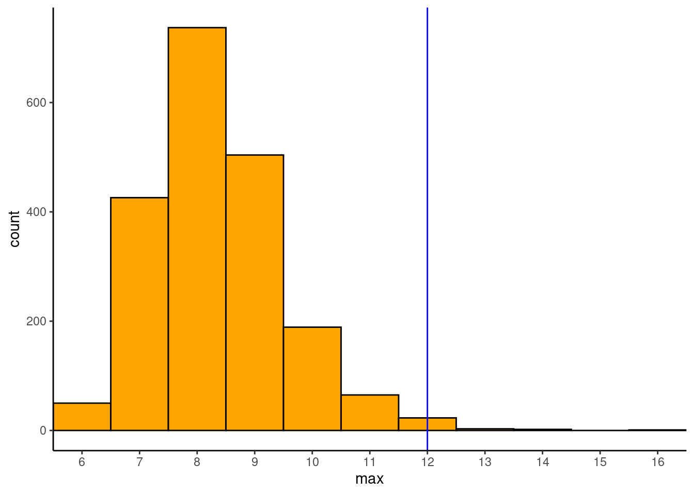
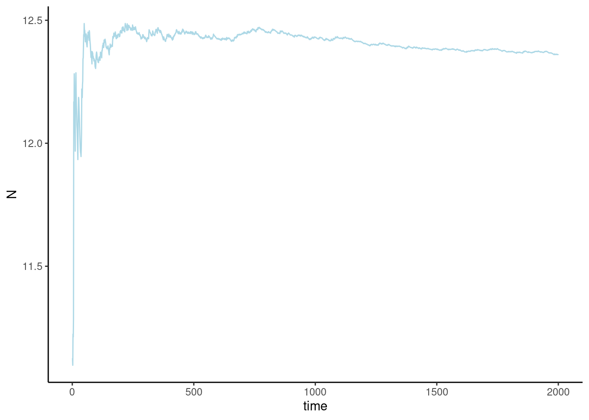

data {
}
parameters {
}
model {
}Chapter 16 Problem Sets
Problem 16.1 Discoveries data revisited
The file evaluation_discoveries.csv contains data on the numbers of ‘great’ inventions and scientific discoveries (\(X_t\)) in each year from 1860 to 1959. In this question you will develop a model to explain the variation in scientific inventions over time. The simplest model here is to assume that (a) one discovery is independent of all others, and (b) the rate of occurrence of discoveries is the same in all years (\(λ\)) . Since the data are discrete, these assumptions suggest the use of a Poisson likelihood:
\[ X_t ∼ Poisson ( λ ) \]
Problem 16.1.1
Open a text editor and create a file called discoveries.stan in your working directory. In the file create three parameter blocks:
Problem 16.1.2
Fill in the data and parameter blocks for the above model.
Problem 16.1.3
Using a \(log-N(2,1)\) prior for \(λ\), code up the model block, making sure to save your file afterwards.
Problem 16.1.4
Open your statistical software (R, Python, Matlab, and so on) and load any packages necessary to use Stan.
data {
int N; // number of observations
int<lower=0> X[N]; // vector of discoveries
}
parameters {
real<lower=0> lambda;
}
model {
X ~ poisson(lambda); // likelihood
lambda ~ lognormal(2, 1); // prior
}
generated quantities{
int<lower=0> XSim[N];
for (i in 1:N) {
XSim[i] = poisson_rng(lambda);
}
}Problem 16.1.5
Load the data into your software and then put it into a structure that can be passed to Stan.
Problem 16.1.6
Run your model using Stan, with four chains, each with a sample size of 1000, and a warm-up of 500 samples. Set seed=1 to allow for reproducibility of your results. Store your result in an object called fit.
Problem 16.1.7
Diagnose whether your model has converged by printing fit.
| term | rhat |
|---|---|
| lambda | 1.003455 |
| lp__ | 1.000205 |
Problem 16.1.8
For your sample what is the equivalent number of samples for an independent sampler?
| term | ess |
|---|---|
| lambda | 675 |
| lp__ | 828 |
Problem 16.1.9
Find the central posterior 80% credible interval for \(λ\).
| term | conf.low | conf.high |
|---|---|---|
| lambda | 2.88 | 3.34 |
10% 90%
2.88 3.34 Problem 16.1.10
Draw a histogram of your posterior samples for \(λ\).
Problem 16.1.11
Load the evaluation_discoveries.csv data and graph it. What does this suggest about our model’s assumptions?
Problem 16.1.12
Create a generated quantities block in your Stan file, and use it to sample from the posterior predictive distribution. Then carry out appropriate posterior predictive checks to evaluate your model. (Hint: use the poisson_rng function to generate independent samples from your lambda.)
[1] 0.0145
Problem 16.1.13
A more robust sampling distribution is a negative binomial model:
\[ X_i ∼ NB ( μ , κ ) , \]
where \(μ\) is the mean number of discoveries per year, and \(var ( X ) = μ + μ^2 / κ\) . Here \(κ\) measures the degree of overdispersion of your model; specifically if \(κ\) increases then overdispersion decreases.
Write a new stan file called discoveries_negbin.stan that uses this new sampling model. (Hint: use the Stan manual section on discrete distributions to search for the correct negative binomial function namlogNe; be careful – there are two different parameterisations of this function available in Stan.) Assume that we are using the following priors:
\[ \begin{aligned} μ &∼ log\text{-}N (2,1) \\ κ &∼ log\text{-}N (2,1) \end{aligned} \] Draw 1000 samples across four chains for your new model. Has it converged to the posterior?
data {
int N; // number of observations
int<lower=0> X[N]; // vector of discoveries
}
parameters {
real<lower=0> mu;
real<lower=0> kappa;
}
model {
X ~ neg_binomial_2(mu, kappa); // likelihood
mu ~ lognormal(2, 1); // prior
kappa ~ lognormal(2, 1); // prior
}
generated quantities{
int<lower=0> XSim[N];
for (i in 1:N) {
XSim[i] = neg_binomial_2_rng(mu, kappa);
}
}| term | estimate | std.error | conf.low | conf.high | rhat | ess |
|---|---|---|---|---|---|---|
| mu | 3.10 | 0.22 | 2.84 | 3.37 | 1.00 | 1,244.00 |
| kappa | 6.83 | 3.55 | 3.72 | 10.83 | 1.00 | 872.00 |
| lp__ | −214.06 | 1.00 | −215.39 | −213.16 | 1.00 | 735.00 |
Problem 16.1.14
Carry out posterior predictive checks on the new model. What do you conclude about the use of a negative binomial here versus the simpler Poisson?
[1] 0.251Now I obtain about 20% of posterior predictive samples that have a maximum value greater than or equal to 12 (that of the real data). This is much more reasonable than that from the Poisson model.
Problem 16.1.15
Find the central posterior 80% credible interval for the mean rate of discoveries \(μ\) from the negative binomial model. How does it compare with your results from the Poisson model? Why is this the case?
| term | conf.low | conf.high |
|---|---|---|
| lambda | 2.88 | 3.34 |
| mu | 2.84 | 3.37 |
Problem 16.1.16
Calculate the autocorrelation in the residuals between the actual and simulated data series. What do these suggest about our current model?
Problem 16.1.17
Following on from the above, suggest an alternative model formulation.
TODO
Problem 16.2 Hungover holiday regressions
The data in file stan_hangover.csv contains a series of Google Trends estimates of the search traffic volume for the term ‘hangover cure’ in the UK between February 2012 and January 2016. The idea behind this problem is to determine how much more hung over people are in the ‘holiday season’, defined here as the period between 10 December and 7 January, than on average for the rest of the year.
Problem 16.2.1
Graph the search volume over time, and try to observe the uplift in search volume around the holiday season.
Problem 16.2.2
The variable holiday is a type of indicator variable that takes the value 1 if the given week is all holiday season, 0 if it contains none of it, and 0 < X < 1 for a week that contains a fraction X of days that fall in the holiday season. Graph this variable over time so that you understand how it works.
Problem 16.2.3
A simple linear regression is proposed of the form:
\[ V_t ∼ \mathcal{N} ( β_0 + β_1 h_t , σ ) , \]
where \(V_t\) is the search volume in week \(t\) and \(h_t\) is the holiday season indicator variable. Interpret \(β_0\) and \(β_1\) and explain how these can be used to estimate the increased percentage of hangovers in the holiday season.
\(β_0\) is the average hangover search volume in weeks that aren’t in the holiday season, and \(β_1\) shows the uplift for a week that falls in the holiday season. The percentage increase is hence \(\frac{β_1}{β_0}\).
Problem 16.2.4
Assuming \(β_i ∼ \mathcal{N} (0,50)\) and \(σ ∼ half \text{-} \mathcal{N}(0,10)\) priors, write a Stan model to estimate the percentage increase in hangoverness over the holiday period.
data {
int N; // number of observations
int<lower=0> Volume[N]; // Volume
real<lower=0,upper=1> Holiday[N];
}
parameters {
real beta0;
real beta1;
real<lower=0> sigma;
}
model {
for (i in 1:N) {
Volume[i] ~ normal(beta0+beta1*Holiday[i], sigma); // likelihood
}
beta0 ~ normal(0, 50); // prior
beta1 ~ normal(0, 50); // prior
sigma ~ normal(0, 10); // prior
}
generated quantities {
real uplift;
uplift = beta1 / beta0;
}| term | estimate | conf.low | conf.high | rhat | ess |
|---|---|---|---|---|---|
| beta0 | 37.98 | 37.54 | 38.40 | 1.00 | 1565 |
| beta1 | 30.88 | 29.23 | 32.45 | 1.00 | 1675 |
| sigma | 8.66 | 8.36 | 8.95 | 1.00 | 1894 |
| uplift | 0.81 | 0.77 | 0.86 | 1.00 | 1527 |
Problem 16.3 Coding up a bespoke probability density
In the file stan_survival.csv there is data for a variable \(Y\) that we believe comes from a prob ability distribution:
\[ p(Y) = \frac{\sqrt[3]{b}}{\Gamma\left(\frac{4}{3}\right)} \exp(-bY^3) \tag{1}\]
where \(b > 0\) is a parameter of interest. In this question we are going to write a Stan program to estimate the parameter \(b\) even though this distribution is not among Stan’s implemented distributions.
Problem 16.3.1
Explain what is meant by the following statement in Stan:
theta ~ beta(1,1);
In particular, explain why this is essentially equivalent to the following:
target += beta_lpdf(theta|1,1);
where target is a Stan variable that stores the overall log probability, and += increments target by an amount corresponding to the right-hand side.
~ statements in Stan do not mean sampling! They always mean increment the log probability by something, since HMC works in the (negative) log probability space. In this case it means increment the log probability by an amount corresponding to the probability density of a value “theta” from a beta(1,1) distribution. This is why it is equivalent to the second piece of code where we explicitly increment the log probability.
Note there is a subtle difference between the two which is that ~ statements drop all constant terms from the log probability update, whereas the target statements keep these. However for most purposes this is not important.
Problem 16.3.2
Work out by hand an expression for the log probability of the density in Equation 1.
\[ \log p = \log \left( \frac{\sqrt[3]{b}}{\Gamma \left( \frac{4}{3} \right)} \right) - b y^3 \]
Problem 16.3.3
Write a Stan function that for a given value of \(y\) and \(b\) calculates the log probability (ignoring any constant terms).
Problem 16.3.4
Use your previously created function to write a Stan program that estimates \(b\), and then use it to do so with the \(y\) series contained within stan_survival.csv. (Hint: Stan functions must be declared at the top of a Stan program.)
functions {
real fCustomProb(real aY, real aB) {
real aConst;
aConst = (aB ^ (1.0 / 3.0));
return(log(aConst) - aB * (aY ^ 3));
}
}
data {
int N;
real Y[N];
}
parameters {
real<lower=0> b;
}
model {
for(i in 1:N) {
target += fCustomProb(Y[i], b);
}
}| term | estimate | std.error |
|---|---|---|
| b | 2.42 | 0.14 |
Problem 16.4 Is a tumour benign or malignant?
Suppose that if a tumour is benign the result of a clinical test for the disease for individual \(i\) is \(X_i ∼ B(20, θ_b )\), whereas if the tumour is malignant \(Xi ∼ B(20, θ_m )\) , where \(θ_b < θ_m\). Suppose that we collect data on 10 patients’ scores on this clinical test, \(X = \{4,18,6,4,5,6,4,6,16,7\}\), and would like to infer the disease status for each individual, as well as the parameters ( \(θ_b\), \(θ_m\)).
Problem 16.4.1
Write down in pseudo-code the full model, where we suppose that we use uniform priors on ( \(θ_b\) , \(θ_m\) ) and discrete uniform priors on the disease status \(s_i\) of individual \(i\).
\[ \begin{align} & s_i \sim \text{discrete-uniform}(1, 2) \\ & \text{if} \quad (s_i = 1) \\ & & X_i \sim \mathcal{B}(20, \theta_b) \\ & \text{else if } (s_i = 2) \\ & & X_i \sim \mathcal{B}(20, \theta_m) \\ \end{align} \]
Problem 16.4.2
Assuming that \(s_i ∈[1,2]\) is the disease status of each individual (1 corresponding to a benign growth, and 2 to a malignant one), use the transformed parameters block to calculate the log probability of each individual’s data. (Hint: this will be a 10 × 2 matrix, where the 2 corresponds to two possible disease statuses for each individual.)
Problem 16.4.3
The disease status of each individual \(s_i ∈[1,2]\) is a discrete variable, and because Stan does not support discrete parameters directly it is not as straightforward to code up these problems as for continuous parameter problems. The way to do this is by marginalising out \(s_i\) from the joint distribution:
\[
p(\theta_b,\theta_m | X) = \sum_{s_1=1}^{2}p(\theta_b,\theta_m,s_1 | X),
\] where we have illustrated this for the disease status of individual 1. This then allows us to find an expression for the posterior density which we log to give lp, and then use target+=lp to increment the log probability. However, because we do this on the log-density scale we instead do the following:
\[ \begin{aligned} \log p(\theta_b,\theta_m | X) &= \log \sum_{s_1=1}^{2}p(\theta_b,\theta_m,s_1 | X) \\ &= \log \sum_{s_1=1}^{2}\exp (\log p(\theta_b,\theta_m,s_1 | X)) \\ &= \text{log\_sum\_exp}_{s_1=1}^{2}(\log p(\theta_b,\theta_m,s_1 | X)) \end{aligned} \]
where log_sum_exp(.) (a function available in Stan) is defined as:
\[ \text{log\_sum\_exp}_{i=1}^{K} \alpha = \log \sum_{i=1}^{K} \exp(\alpha) \]
and is a numerically more stable way of doing the above calculation. Using this knowledge, write a full Stan model that implements this marginalisation, and use it to estimate \(θ_b\) and \(θ_m\) . (Hint: use the binomial_logit_lpmf(X[i]|N,alpha[s]) function in Stan and define ordered[2] alpha, then transform from the unconstrained alpha to theta using inv_logit.)
Problem 16.4.4
We use the generated quantities block to estimate the probabilities of state s=1 in each different experiment by averaging over all L posterior draws:
\[ q(s=1|X) \approx \frac{1}{L}\sum_{i=1}^Lq(s=1,alpha[s=1]|X), \]
where \(q(.)\) is the unnormalised posterior density. The averaging over all posterior draws is necessary to marginalise out the alpha parameter. To normalise the posterior density we therefore divide the above by the sum of the un-normalised probability across both states:
\[
Pr(s=1|X) = \frac{q(s=1|X)}{q(s=1|X)+q(s=2|X)}
\] Using the above knowledge, add a generated quantities block to your Stan model that does this, and hence estimate the probability that each individual’s tumour is benign.
data {
int<lower=1> nStudy; // number studies
int<lower=1> N; // samples per study
int<lower=0, upper=N> X[nStudy]; // number successes
}
parameters {
ordered[2] alpha;
}
transformed parameters {
real<lower=0,upper=1> theta[2];
matrix[nStudy, 2] lp;
for(i in 1:2) {
theta[i] = inv_logit(alpha[i]);
}
for(n in 1:nStudy) {
for(s in 1:2) {
lp[n,s] = log(0.5) + binomial_logit_lpmf(X[n] | N, alpha[s]);
}
}
}
model {
for(n in 1:nStudy) {
target += log_sum_exp(lp[n]);
}
}
generated quantities {
matrix[nStudy, 2] pstate;
for(n in 1:nStudy) {
pstate[n] = exp(lp[n] - log_sum_exp(lp[n]));
}
}| subject | prob_benign | prob_malignant |
|---|---|---|
| 1 | 1.00 | 0.00 |
| 2 | 0.00 | 1.00 |
| 3 | 1.00 | 0.00 |
| 4 | 1.00 | 0.00 |
| 5 | 1.00 | 0.00 |
| 6 | 1.00 | 0.00 |
| 7 | 1.00 | 0.00 |
| 8 | 1.00 | 0.00 |
| 9 | 0.00 | 1.00 |
| 10 | 1.00 | 0.00 |
Problem 16.5 How many times did I flip the coin?
Suppose that I have a coin with \(θ\) denoting the probability of it landing heads-up. In each experiment I flip the coin \(N\) times, where \(N\) is unknown to the observer, and record the number of heads obtained \(Y\). I repeat the experiment 10 times, each time flipping the coin the same \(N\) times, and record \(Y = \{9, 7, 11, 10, 10, 9, 8, 11, 9, 11\}\) heads.
Problem 16.5.1
Write down an expression for the likelihood, stating any assumptions you make.
Assuming independent and identically-distributed observations we obtain,
\[ Y_i \sim \mathcal{B}(N,\theta) \]
Problem 16.5.2
Suppose that the maximum number of times the coin could be flipped is 20, and that all other (allowed) values we regard a priori as equally probable. Further suppose that, based on previous coin flipping fun, we specify a prior \(θ ∼ beta(7,2)\). Write down the model as a whole (namely, the likelihood and the priors).
\[ \begin{aligned} Y_i &\sim \mathcal{B}(N,\theta) \\ N &\sim \text{discrete-uniform}(11, 20) \\ \theta &\sim beta(7,2) \end{aligned} \]
Problem 16.5.3
This problem can be coded in Stan by marginalising out the discrete parameter \(N\). The key to doing this is to write down an expression for the log probability for each result \(Y_i\) conditional on an assumed value of \(N\), and \(θ\) . Explain why this can be written in Stan as:
log(0.1) + **binomial_lpmf**(Y[i]|N[s],theta);
where N[s] is the sth element of a vector \(\textbf{N}\) containing all possible values for this variable.
Problem 16.5.4
In the transformed parameters block, write code that calculates the log probability for each experiment and each possible value of \(N\).
Problem 16.5.5
Write a Stan program to estimate \(θ\). (Hint: in the model block use target+=log_sum_exp(lp) to marginalise out \(N\) and increment the log probability.)
Problem 16.5.6
Use the generated quantities block to estimate the probabilities of each state.
This relies on us estimating the un-normalised density for the number of coin flips by averaging over all samples for \(θ\),
\[ q(N=11|Y) = \frac{1}{L}\sum_{i=1}^Lq(N=11,\theta_i|Y) \]
where \(q(.)\) is the un-normalised posterior density and \(L\) is the number of posterior samples. To normalise this density we then divide the above by the un-normalised density for all other possible values for \(N\),
\[ Pr(N=11|Y) = \frac{q(N=11|Y)}{\sum_{N=11}^{20}q(N=i|Y)} \]
To do this in Stan we use log_sum_exp(.) which is defined as,
\[ \text{log\_sum\_exp}_{i=1}^{K}\alpha = \log\sum_{i=1}^{K}\exp(\alpha), \]
which allows us to marginalise out any dependence on \(N\) in log prob space because,
\[ \begin{aligned} \log p(\theta) &= \log \sum_{N=11}^{20}p(\theta, N) \\ &= \log \sum_{N=11}^{20}\exp (\log p(\theta, N)) \\ &= \text{log\_sum\_exp}_{N=11}^{20}(\log p(\theta, N)), \end{aligned} \]
data {
int K;
int Y[K];
}
transformed data {
int N[10];
for(s in 11:20) {
N[s-10] = s;
}
}
parameters {
real<lower=0,upper=1> theta;
}
transformed parameters {
vector[10] lp;
for(s in 1:10) {
lp[s] = log(0.1) + binomial_lpmf(Y | N[s], theta);
}
}
model {
target += log_sum_exp(lp);
theta ~ beta(7,2);
}
generated quantities {
simplex[10] pState;
pState = exp(lp - log_sum_exp(lp));
}